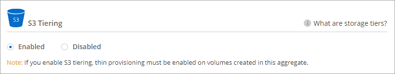
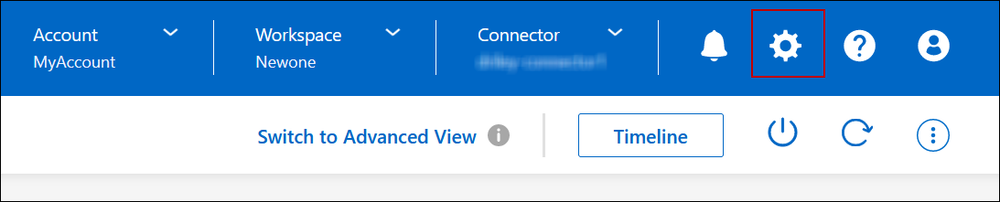

Notas de la versión
Notas de la versión
Organización en niveles de los datos inactivos en almacenamiento de objetos de bajo coste
 Sugerir cambios
Sugerir cambios
Puede reducir los costes de almacenamiento de Cloud Volumes ONTAP combinando un nivel de rendimiento de SSD o HDD para datos activos con un nivel de capacidad de almacenamiento de objetos para los datos inactivos. La organización en niveles de datos utiliza la tecnología FabricPool. Para obtener información general de alto nivel, consulte "Información general sobre organización en niveles de datos".
Para configurar la organización en niveles de los datos, debe hacer lo siguiente:
 Elija una configuración compatible
Elija una configuración compatibleLa mayoría de configuraciones son compatibles. Si tiene un sistema Cloud Volumes ONTAP con la versión más reciente, debería ser bueno. "Leer más".
 Garantice la conectividad entre Cloud Volumes ONTAP y el almacenamiento de objetos
Garantice la conectividad entre Cloud Volumes ONTAP y el almacenamiento de objetos-
Para Azure, ya no necesitará hacer nada mientras BlueXP tenga los permisos necesarios. Leer más.
 Compruebe que tiene un agregado con la organización en niveles habilitada
Compruebe que tiene un agregado con la organización en niveles habilitadaLa organización en niveles de los datos debe estar habilitada en un agregado para poder habilitar la organización en niveles de los datos en un volumen. Debe conocer los requisitos de los volúmenes nuevos y existentes. Leer más.
 Elija una política de organización en niveles cuando cree, modifique o replique un volumen
Elija una política de organización en niveles cuando cree, modifique o replique un volumenBlueXP le solicita que elija una política de organización en niveles al crear, modificar o replicar un volumen.

|
¿Qué'no se requiere para la organización en niveles de datos?
|
Configuraciones compatibles con la organización en niveles de los datos
Puede habilitar la organización en niveles de los datos al utilizar configuraciones y funciones específicas.
Compatible con Azure
-
La siguiente es compatible con la organización en niveles de datos en Azure:
-
Versión 9.4 en sistemas de un solo nodo
-
Versión 9.6 con pares de alta disponibilidad
-
-
El nivel de rendimiento puede ser discos gestionados Premium SSD, discos gestionados Standard SSD o discos gestionados Standard HDD.
Interoperabilidad de funciones
-
Las tecnologías de cifrado admiten la organización en niveles de datos.
-
Debe estar habilitado thin provisioning en los volúmenes.
Requisitos
En función de su proveedor de cloud, se deben configurar determinadas conexiones y permisos para que Cloud Volumes ONTAP pueda organizar en niveles los datos inactivos en el almacenamiento de objetos.
Requisitos para organizar los datos fríos en niveles en almacenamiento de Azure Blob
No es necesario configurar una conexión entre el nivel de rendimiento y el nivel de capacidad siempre que BlueXP tenga los permisos necesarios. BlueXP habilita un extremo de servicio de vnet para usted si la función personalizada para el conector tiene estos permisos:
"Microsoft.Network/virtualNetworks/subnets/write",
"Microsoft.Network/routeTables/join/action",Los permisos se incluyen de forma predeterminada en la función personalizada. "Ver permiso de Azure para el conector"
Activación de la organización en niveles de datos tras la implementación de los requisitos
BlueXP crea un almacén de objetos para datos inactivos cuando se crea el sistema, siempre que no haya problemas de conectividad o permisos. Si no implementó los requisitos mencionados anteriormente hasta después de crear el sistema, deberá habilitar manualmente la organización en niveles mediante la API o System Manager, para crear el almacén de objetos.
|
|
La capacidad de habilitar la organización en niveles a través de la interfaz de usuario de BlueXP estará disponible en una futura versión de Cloud Volumes ONTAP. |
Garantía de que la organización en niveles está activada en agregados
La organización en niveles de los datos debe estar habilitada en un agregado para poder habilitar la organización en niveles de los datos en un volumen. Debe conocer los requisitos de los volúmenes nuevos y existentes.
-
nuevos volúmenes
Si va a habilitar la organización en niveles de datos en un nuevo volumen, no tendrá que preocuparse de habilitar la organización en niveles de los datos en un agregado. BlueXP crea el volumen en un agregado existente que tiene activada la organización en niveles o crea un nuevo agregado para el volumen si aún no existe ningún agregado con la función de organización en niveles de datos.
-
volúmenes existentes
Si desea habilitar la organización en niveles de datos en un volumen existente, debe asegurarse de que la organización en niveles de datos esté habilitada en el agregado subyacente. Si la organización en niveles de datos no está habilitada en el agregado existente, deberá usar System Manager para adjuntar un agregado existente al almacén de objetos.
-
Abra el entorno de trabajo en BlueXP.
-
Haga clic en la pestaña Aggregates.
-
Desplácese hasta el icono deseado y verifique si la organización en niveles está habilitada o deshabilitada en el agregado.

-
En System Manager, haga clic en almacenamiento > niveles.
-
Haga clic en el menú de acción del agregado y seleccione Adjuntar niveles de cloud.
-
Seleccione el nivel de nube que desea adjuntar y haga clic en Guardar.
Ahora puede habilitar la organización en niveles de los datos en volúmenes nuevos y existentes, como se explica en la siguiente sección.
Organización en niveles de los datos de volúmenes de lectura y escritura
Cloud Volumes ONTAP puede organizar los datos inactivos en niveles en volúmenes de lectura y escritura para un almacenamiento de objetos rentable, liberando al nivel de rendimiento de los datos activos.
-
En la pestaña Volumes en el entorno de trabajo, cree un volumen nuevo o cambie el nivel de un volumen existente:
Tarea Acción Cree un nuevo volumen
Haga clic en Añadir nuevo volumen.
Modifique un volumen existente
Seleccione el mosaico de volumen deseado, haga clic en Administrar volumen para acceder al panel derecho de la gestión de volúmenes y, a continuación, haga clic en acciones avanzadas y Cambiar política de organización en niveles en el panel derecho.
-
Seleccione una política de organización en niveles.
Para obtener una descripción de estas políticas, consulte "Información general sobre organización en niveles de datos".
ejemplo

BlueXP crea un nuevo agregado para el volumen si aún no existe un agregado habilitado para la organización en niveles de datos.
Organización en niveles de los datos de los volúmenes de protección de datos
Cloud Volumes ONTAP puede organizar los datos en niveles desde un volumen de protección de datos a un nivel de capacidad. Si activa el volumen de destino, los datos se mueven gradualmente al nivel de rendimiento a medida que se leen.
-
En el menú de navegación de la izquierda, selecciona almacenamiento > Canvas.
-
En la página lienzo, seleccione el entorno de trabajo que contiene el volumen de origen y, a continuación, arrástrelo al entorno de trabajo al que desea replicar el volumen.
-
Siga las indicaciones hasta llegar a la página Tiering y habilitar la organización en niveles de datos en el almacenamiento de objetos.
ejemplo

Para obtener ayuda sobre la replicación de datos, consulte "Replicar datos hacia y desde el cloud".
Cambio del tipo de almacenamiento para datos organizados por niveles
Después de poner en marcha Cloud Volumes ONTAP, puede reducir sus costes de almacenamiento cambiando la clase de almacenamiento para los datos inactivos a los que no se ha accedido durante 30 días. Los costes de acceso son más elevados si se accede a los datos, por lo que debe tener en cuenta antes de cambiar la clase de almacenamiento.
El tipo de almacenamiento para los datos por niveles es de amplio alcance del sistema: it no por volumen.
Para obtener más información sobre las clases de almacenamiento compatibles, consulte "Información general sobre organización en niveles de datos".
-
En el entorno de trabajo, haga clic en el icono de menú y, a continuación, haga clic en clases de almacenamiento o almacenamiento en blob.
-
Elija una clase de almacenamiento y, a continuación, haga clic en Guardar.
Cambiar la relación entre el espacio libre y la organización en niveles de los datos
La relación entre el espacio libre y la organización en niveles de los datos define cuánto espacio libre se requiere en SSD/HDD de Cloud Volumes ONTAP al organizar los datos en niveles en el almacenamiento de objetos. La configuración predeterminada es 10% de espacio libre, pero puede ajustar la configuración en función de sus necesidades.
Por ejemplo, es posible que elija menos del 10 % de espacio libre para garantizar que utiliza la capacidad adquirida. BlueXP puede entonces comprar discos adicionales para usted cuando se requiera capacidad adicional (hasta que alcance el límite de disco para el agregado).

|
Si no hay espacio suficiente, Cloud Volumes ONTAP no puede mover los datos y podría experimentar una degradación del rendimiento. Cualquier cambio debe hacerse con precaución. Si no está seguro, póngase en contacto con el servicio de soporte de NetApp para obtener instrucciones. |
La relación es importante en escenarios de recuperación ante desastres, ya que a medida que se leen los datos del almacén de objetos, Cloud Volumes ONTAP traslada los datos a SSD/HDD para proporcionar un mejor rendimiento. Si no hay espacio suficiente, Cloud Volumes ONTAP no puede mover los datos. Tenga esto en cuenta a la hora de cambiar la proporción para que pueda satisfacer sus requisitos empresariales.
-
En la parte superior derecha de la consola BlueXP, haga clic en el icono Configuración y seleccione Configuración del conector.

-
En capacidad, haga clic en umbrales de capacidad agregada - relación de espacio libre para la organización en niveles de datos.
-
Cambie la relación de espacio libre en función de sus requisitos y haga clic en Guardar.
Cambiar el período de refrigeración de la política de organización automática en niveles
Si habilitó la organización en niveles de datos en un volumen Cloud Volumes ONTAP mediante la política auto Tiering, puede ajustar el período de refrigeración predeterminado en función de las necesidades del negocio. Esta acción es compatible únicamente con API y CLI.
El período de refrigeración es el número de días en los que los datos del usuario en un volumen deben permanecer inactivos antes de considerarlos «activos» y moverlos a un almacenamiento de objetos.
El período de refrigeración predeterminado para la política de organización automática en niveles es de 31 días. Puede cambiar el período de refrigeración de la siguiente manera:
-
9.8 o posterior: de 2 días a 183 días
-
9.7 o anterior: de 2 días a 63 días
-
Utilice el parámetro minimiumCoolingDays con su solicitud de API al crear un volumen o modificar un volumen existente.